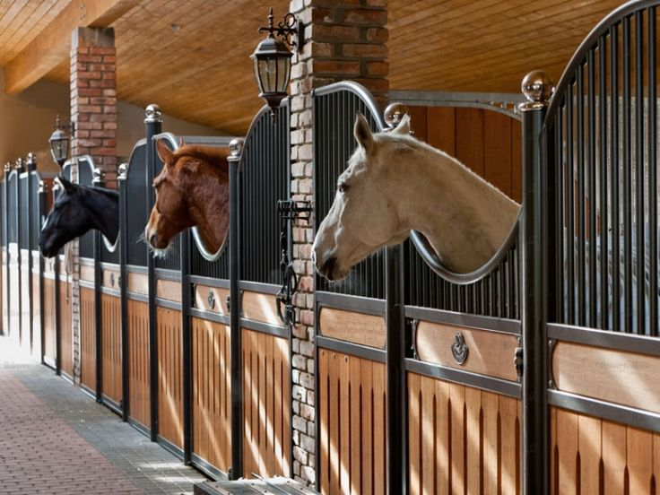
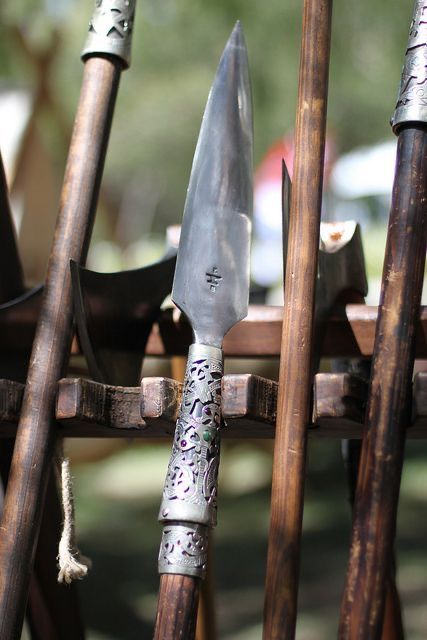
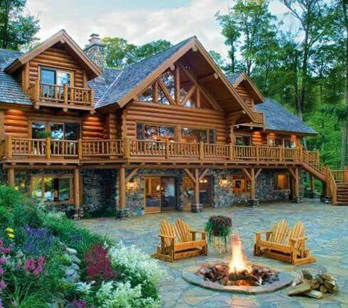
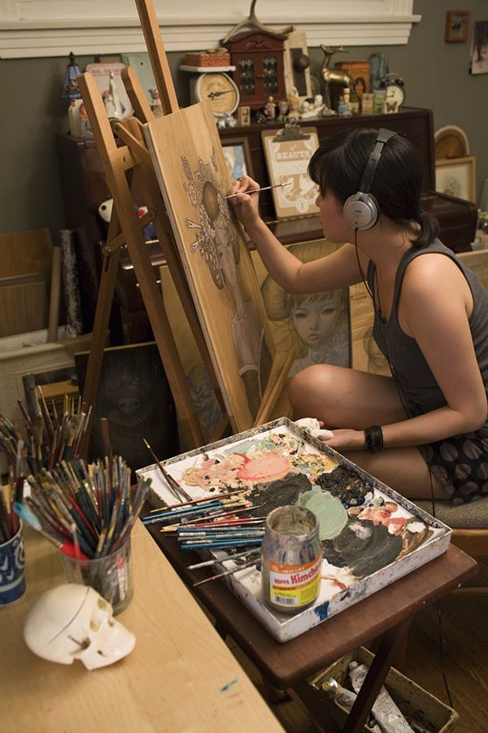
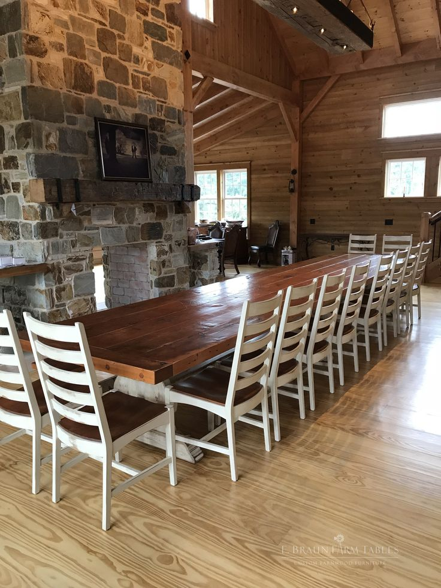
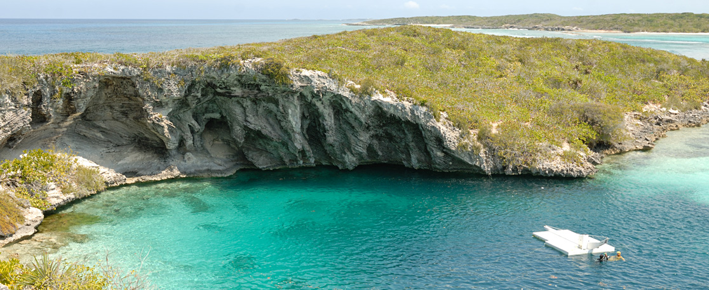
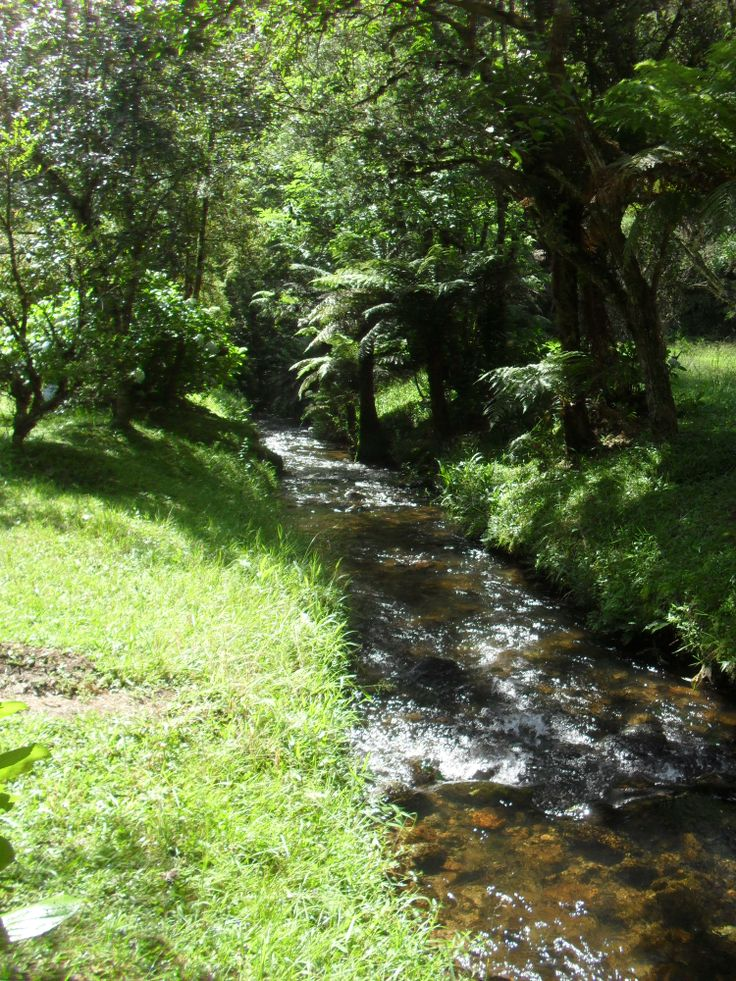

Como Sobreviver no Acampamento Meio-Sangue
Para sobreviver no Acampamento Meio-Sangue, é importante conhecer bem o local e suas instalações. Abaixo, você encontrará informações sobre os principais locais dentro do acampamento, incluindo mapas e descrições detalhadas.
Mapa do Acampamento

O mapa do acampamento mostra a disposição geral das principais áreas, como a Casa Grande, o Pinheiro de Thalia, os Estábulos, entre outros. É útil para se orientar dentro do acampamento.
Estábulos
Os Estábulos do acampamento são onde os semideuses mantêm seus pégasos e outros animais mitológicos. Eles são cuidados por campistas especializados em lidar com essas criaturas.
Arsenal
O Arsenal é onde os semideuses treinam e obtêm armas para se prepararem para as batalhas. Lá, você pode encontrar uma variedade de armas, desde espadas até arcos e flechas.
Campos de Morangos

Os Campos de Morangos são onde os campistas cultivam morangos mágicos, que têm propriedades de cura. Eles também servem como área de treinamento para atividades de combate e sobrevivência.
Casa Grande
A Casa Grande é o prédio principal do acampamento, onde o diretor e outros líderes residem. É também o local de reuniões importantes e eventos do acampamento.
Pinheiro de Thalia

O Pinheiro de Thalia é um pinheiro mágico que marca a entrada do Acampamento Meio-Sangue. Foi criado por Zeus como um símbolo de proteção para os semideuses.
Arte e Ofícios
O local de Arte e Ofícios é onde os campistas podem explorar sua criatividade e habilidades artísticas. Eles podem trabalhar com diferentes materiais e criar itens úteis para o acampamento.
Lago

O lago do acampamento é um local tranquilo e sereno, onde os semideuses podem relaxar e praticar atividades aquáticas. É também um local de encontros românticos e momentos de paz.
Anfiteatro

O Anfiteatro é onde acontecem apresentações, performances e eventos especiais no acampamento. É um local importante para a comunidade, onde os campistas podem se reunir e se divertir juntos.
Parede de Escalada

A Parede de Escalada é um desafio para os semideuses testarem suas habilidades físicas e de escalada. É um local popular para treinamento e competições entre os campistas.
Pavilhão do Refeitório
O Pavilhão do Refeitório é onde os campistas se reúnem para as refeições. É um grande espaço com mesas e bancos, onde são servidas deliciosas refeições preparadas pelos sátiros e pelos próprios semideuses.
Praia dos Fogos

A Praia dos Fogos é um local de lazer e diversão no acampamento. Os semideuses podem relaxar na areia, nadar nas águas cristalinas e até mesmo fazer festas ao redor das fogueiras à noite.
Estreito de Long Island
O Estreito de Long Island é a entrada para o Acampamento Meio-Sangue vindo do mundo exterior. É onde os campistas chegam e partem em suas missões e aventuras.
Riacho Zéfiro
O Riacho Zéfiro é uma fonte de água potável e fresca para os semideuses. É um local tranquilo e refrescante, onde os campistas podem se banhar e se revitalizar após um dia de treinamento.
Colina Meio-Sangue

A Colina Meio-Sangue é o ponto mais alto do acampamento e oferece uma vista panorâmica de toda a área. É um local sagrado e importante para os semideuses, onde cerimônias e rituais especiais são realizados.